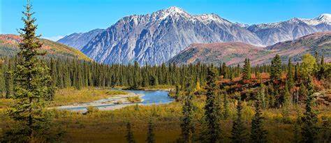

Dir, located in the Khyber Pakhtunkhwa province of Pakistan, is indeed endowed with breathtaking natural beauty. Here are some of the beautiful places to visit in Dir:
Kumrat Valley is one of the most picturesque valleys in Dir. It's known for its lush greenery, snow-capped peaks, and the Panjkora River. The valley offers fantastic trekking opportunities and is a paradise for nature enthusiasts.In the heart of Khyber Pakhtunkhwa, Pakistan, lies the enchanting Kumrat Valley, a paradise straight out of a fairy tale. Travelers are welcomed by majestic pine trees, the melodious Panjkora River, and warm smiles from locals. As visitors venture deeper into the valley, they encounter the mesmerizing Jahaz Banda meadow, adorned with vibrant flowers and surrounded by a symphony of nature. Trekking through Kumrat reveals a diverse array of flora and fauna, including rare butterflies and elusive wildlife. The highlight of the journey is the awe-inspiring Kumrat Waterfall, where the water creates dazzling rainbows and leaves travelers in awe. Beyond its natural beauty, Kumrat Valley offers a profound connection with nature and humanity. The camaraderie among travelers and the kindness of locals create an atmosphere of unparalleled bliss. This tale of Kumrat Valley is not just a travel story; it's a tribute to preserving nature's wonders and cherishing the delicate balance between humans and the environment.
Jahaz Banda, which translates to "The Valley of Ships," is famous for its alpine meadows adorned with colorful flowers. It's a trekker's delight and offers stunning views of the surrounding mountains and valleys.Nestled in Pakistan's Khyber Pakhtunkhwa province, Jahaz Banda is a captivating meadow aptly named "The Valley of Ships." Accessible through winding trails and surrounded by majestic pine trees, the meadow offers a surreal experience. Vibrant wildflowers carpet the ground, framed by snow-capped peaks. Jahaz Banda's tranquility, accompanied by birdsong and rustling leaves, creates a serene atmosphere, allowing travelers to connect deeply with nature. Camping under the starlit sky enhances the experience, making Jahaz Banda not just a destination but an unforgettable emotion, emphasizing the importance of preserving such natural beauty for future generations.
While technically not in Dir but nearby in the Swat district, Kalaam Valley is easily accessible and renowned for its natural beauty. Surrounded by lush green hills, waterfalls, and the Ushu Forest, Kalaam Valley is a sight to behold.Nestled in the scenic Swat District of Pakistan, Kalam Valley is a traveler's paradise, characterized by its lush greenery, snow-capped peaks, and crystal-clear rivers. Travelers are welcomed by winding roads lined with pine trees and the melodious Swat River accompanying the journey.
Upon reaching Kalam, visitors are enchanted by its panoramic views and the soothing melody of the Ushu River. The valley offers a range of outdoor activities, from trekking along picturesque trails to enjoying the tranquility of the surrounding landscapes.
Local culture adds a unique charm, with warm hospitality and traditional cuisine inviting travelers to savor the region's flavors. Kalam's beauty is heightened by its waterfalls, including the mesmerizing Ushu Forest Waterfall, where the water cascades over rocks, creating a captivating spectacle.
Kalam Valley is not just a destination; it's a retreat for nature lovers, trekkers, and those seeking serenity amid breathtaking landscapes. With its natural splendor and cultural richness, Kalam offers a short yet immersive traveling experience, leaving visitors with lasting memories of its unparalleled beauty.
The Panjkora River flows through Dir and offers scenic spots for picnics and relaxation. The riverbanks are ideal for a serene day out, enjoying the natural ambiance and the sound of flowing water.The Panjkora River, flowing through the picturesque landscapes of Khyber Pakhtunkhwa, Pakistan, offers a short yet enchanting travel experience. Surrounded by lush greenery and accompanied by the melody of flowing water, travelers find solace along its banks. The river provides serene spots for picnics and relaxation, allowing visitors to immerse themselves in nature's tranquility. Its crystal-clear waters and scenic beauty create a peaceful atmosphere, making it a perfect destination for a brief getaway, where one can unwind and connect with the soothing rhythm of nature.
Shahi Bagh, translating to "Royal Garden," is a beautifully landscaped garden in Dir. It's a serene place to unwind, featuring manicured lawns, colorful flowers, and a peaceful atmosphere.Shahi Bagh, a meticulously landscaped garden, unfolds as a serene haven for travelers seeking respite. Located in Dir, Pakistan, this verdant paradise offers a peaceful escape. Visitors are welcomed by manicured lawns, colorful blooms, and a tranquil ambiance.
As travelers explore Shahi Bagh, they find themselves surrounded by nature's beauty. The garden's design, coupled with the fragrance of blooming flowers, creates a sensory delight. It becomes a place to unwind, breathe in the fresh air, and revel in the simplicity of nature.
Shahi Bagh's charm lies not just in its aesthetic appeal but also in its ability to evoke a sense of calm. It becomes a space where visitors can escape the hustle of everyday life, finding solace in the midst of nature's wonders. Shahi Bagh, in its elegance, transforms into a destination where time slows down, and travelers find rejuvenation amidst its lush greenery.
The Dir Old Fort, also known as Bala Hisar, is an ancient fort that reflects the region's historical significance. Exploring the fort provides a glimpse into the area's rich cultural heritage.The Dir Old Fort, also known as Bala Hisar, stands as a historical gem in Dir, Pakistan. This ancient fort, steeped in heritage, offers visitors a glimpse into the region's rich history and cultural significance. Constructed with ancient architectural finesse, it echoes tales of bygone eras.
Visitors to the Dir Old Fort are transported back in time, exploring its sturdy walls and time-worn corridors. The fort's aura resonates with a sense of antiquity, inviting travelers to envision the lives of those who once inhabited its chambers. It becomes a space where history comes alive, telling stories of battles, royalty, and the evolution of the region.
As travelers explore the Dir Old Fort, they embark on a journey through the annals of time, appreciating the architectural marvels and cultural heritage that have shaped the region. It stands as a testament to the enduring legacy of Dir, captivating the imagination of all those who step through its ancient gates.
Barawal Bandai is another captivating spot known for its waterfalls and scenic beauty. The area is great for photography, and the sound of cascading water adds to the soothing ambiance.Barawal Bandai, nestled in the heart of nature, is a captivating destination in Dir, Pakistan. This picturesque spot is renowned for its scenic beauty and serene atmosphere. Visitors are greeted by the soothing melody of cascading waterfalls and the lush greenery that envelops the area.
Travelers exploring Barawal Bandai find themselves amidst a natural spectacle. The waterfalls, with their mesmerizing flow, create a sense of wonder and awe. The area becomes a haven for photographers, capturing the essence of nature in its purest form.
Barawal Bandai offers a serene escape, where visitors can unwind amidst the tranquility of the surroundings. It becomes a destination where the beauty of the waterfalls and the harmony of nature create a perfect backdrop for relaxation and contemplation. For those seeking a brief yet enchanting encounter with nature, Barawal Bandai stands as an ideal destination, leaving travelers with memories of its captivating beauty.
Although located in the Upper Dir district, Sheikh Badin National Park is worth mentioning. It's a haven for wildlife enthusiasts, featuring diverse flora and fauna, making it a great destination for eco-tourism.
Remember, before planning your visit, it's always a good idea to check the local regulations and travel advisories to ensure a safe and enjoyable trip.The journey through Dir, Pakistan, was a captivating odyssey, leading travelers through a tapestry of natural wonders and cultural riches. Starting with the picturesque Kumrat Valley, the expedition unveiled a realm of lush greenery, majestic waterfalls, and warm local hospitality. Jahaz Banda, with its vibrant wildflowers and snow-capped peaks, mesmerized the senses, offering a profound connection with nature.
In Kalam Valley, travelers discovered a paradise nestled amid pine trees and the melodious Swat River. The valley's serene ambiance, coupled with outdoor activities and traditional cuisine, provided an immersive cultural experience. The Ushu Forest Waterfall stood as a testament to nature's grandeur, leaving an indelible mark on the journey.
Panjkora River offered a tranquil respite, its crystal-clear waters creating peaceful moments along its banks. The ancient Dir Old Fort, or Bala Hisar, provided a glimpse into the region's rich history, invoking a sense of awe with its architectural marvels.
The expedition further led to Barawal Bandai, where the cascading waterfalls and lush surroundings painted a picture of natural splendor. Finally, Sheikh Badin National Park became a sanctuary of biodiversity, emphasizing the delicate harmony between humans and the wilderness.
This trip through Dir was not just a physical journey but a soul-stirring adventure, where travelers were immersed in the enchanting beauty of nature and the vibrant tapestry of local culture. It served as a reminder of the importance of conservation and left an enduring appreciation for the wonders of the natural world.
